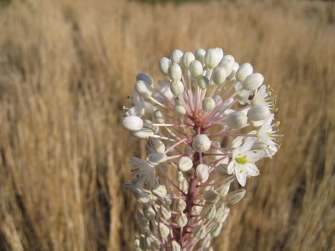

| PHRYGANA | Fauna | Flora |
additions nouveautés |
espèces species |
contact -
info - commentaires phrygana1@gmail.com |
| diversité crétoise -- Cretan diversity | |||||
| Charybdis maritima (L.) SPETA |
| 4 | Flora | HYACINTHACEAE | Charybdis |
Charybdis maritima Melambes (Agios Giorgos) 25 octobre 2006 |
en: Sea squill |
|
| synonyme: Urginea maritima (L.) BAKER, Drimia maritima (L.) STEARN | |
| Feuilles: toutes basilaires vert brillant, disparaissant en été avant la floraison. | |
| Bulbe: gros (jusqu'à 18 cm de diamètre), à peine souterrain. | |
| Hampe florale à section ronde, glabre, rougêatre,non feuillée. | |
| Fleurs: blanches très nombreuses (plus de 50) groupées en un long racème, courtement pédicellées (10 - 30 mm). Les tépales blancs, longs de 9 - 10mm, étalés en étoile, ont une ligne médiane verte ou pourprée. | |
| Anthères: vertes, devant jaunes ensuite. Filet blanc. | |
| Fruit: une capsule de section triangulaire, contenant des graines noires. | |
| Hauteur: 60 - 150 cm | Type biologique: géophyte bulbeux |
| Floraison: août septembre octobre | Altitudes: 0 - 1400 m |
| Statut en Crète: indigène -- native | |
| Biotopes en Crète: phrygana, garrigue, falaises côtières, lieux rocailleux. Plante répandue en Crète. | |
| Distribution: région méditerranéenne. | |
| Plante mellifère. | |
| Note: plante vénéneuse dans toutes ses parties. Autrefois, le bulbe séché était utilisé médicinalement pour traiter des maladies cardiaques. | |
| Note:
Il semble que les plantes de Crète pourraient être C. aphylla
(Forssk.) Speta (2n
= 40) (Krenn & al., 2001 in Stapfia 75) ou une espèce nouvelle de
Charybdis encore à décrire (espèce déjà trouvée au Péloponnèse,
Cythère et les Ciclades
(Pfosser & Speta, 2001 in Stapfia 75). Suivant Speta & al,
Charybdis maritima sensu
stricto (comme taxon hexaploïde) serait
limité à la région méditerranéenne occidentale. |
|
Charybdis maritima Melambes (Agios Giorgos) 27 septembre 2009 |
|
Charybdis maritima Melambes (Agios Giorgos) 26 novembre 2009 |
Charybdis maritima Melambes (Agios Giorgos) 14 décembre 2007 |
 Charybdis maritima Melambes (Agios Giorgos) 25 octobre 2006 |
| 16 septembre 2010 |
| © paul fontaine -- © Phrygana.eu 2007 -- 2013 |